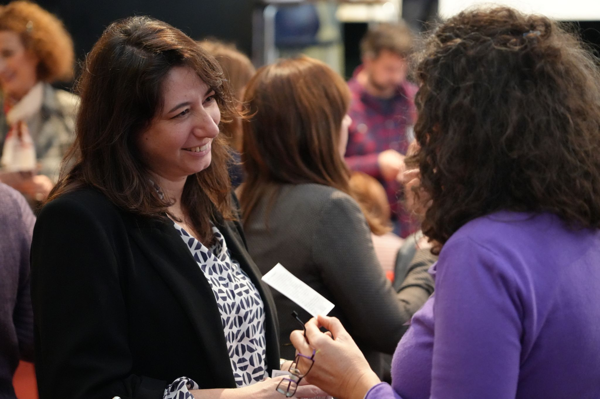
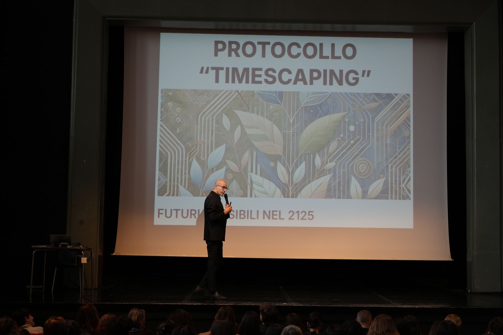
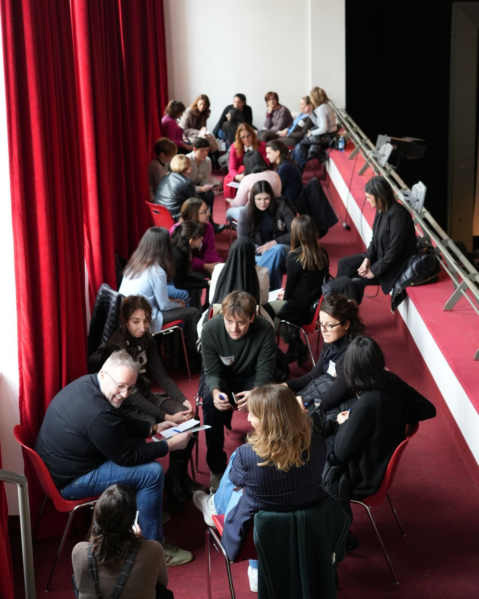
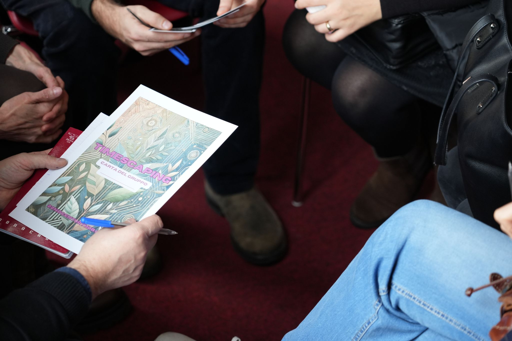

One hundred and thirty team members. One theatre. One morning to collectively imagine a future that does not yet exist.
Mestieri Lombardia is a non-profit employment agency operating across the Lombardy region, supporting people facing social marginality and barriers to entering the labour market. The organisation works in close collaboration with a network of social cooperatives and community organisations, offering services from labour-market integration to support for social enterprises around inclusion and corporate responsibility.
A Timescaping session was commissioned as part of FaceDate, the organisation's annual gathering bringing together staff from across the region. The goal was to create a shared reflective moment for a large and diverse group, opening space to think about the future of work and the digital transition, particularly in relation to marginalised communities. The event brought together more than 130 team members, many of whom do not work together on a daily basis and come from different local contexts and professional roles.

The session needed to engage a large audience without relying on close one-to-one facilitation, remain playful and reflective rather than lecture-based, create space for long-term thinking in a context usually focused on operational urgency, and address the sensitive theme of work and digital transition with attention to social marginality.
To respond to the scale, the session was designed as a guided, multi-phase experience with a clear narrative structure to support autonomy and collective engagement. Participants were invited to imagine receiving signals from the year 2125 through a structured Timescaping protocol, preparing their attention before moving into small-group work.
Rather than prescribing outcomes, the session offered a thematic focus on work in the digital transition, while leaving participants free to explore adjacent questions. Groups worked inside the theatre space with Timescape cards related to futures of work, technology, and society, then co-created their own original cards. In the final part of the session, 21 groups produced 21 new Timescape cards. A light digital layer using Slido was used to gather anonymous inputs, surface shared concerns, and sense participants' attitudes toward the future.
Ahead of the event, preparatory meetings were held with the director of Mestieri Lombardia and the FaceDate project team. A dedicated card set of 60 cards was assembled, translated into Italian, and printed. Custom card templates were prepared for group creation.
The logistics of running a session inside a theatre, not an ideal workshop space, were carefully designed to support movement, group formation, and collaboration. A slide presentation was created to provide extra clarity for participants throughout the session.

Despite spatial constraints, the format proved robust and adaptable. Positioned before a communal lunch and a theatre performance on digital transition, the session acted as a collective mental reset, opening the rest of the day.
It generated active collaboration between participants who did not previously know each other, a shared imaginative language around work, technology, and inclusion, and a tangible output in the form of participant-created Timescape cards.

This session shows how Timescaping can be adapted to large groups of 100 or more participants, socially complex themes, non-ideal spaces, and audiences not accustomed to speculative or future-oriented work.
By combining a clear narrative structure with participant autonomy, the session supported depth, playfulness, and reflection even at scale.
